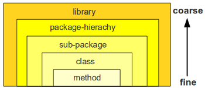

A appropriate modularization of your codebase is important. It has positive side-effects in many directions (testability, code comprehensability, build-speed etc.). Still there are different levels of modularization. These levels can be categorized from fine-grained to coarse grained.
Note: For simplicty throughout the post I will use java terms (class, method, package). Of course this can be mapped to other languages constructs like functions, file-includes or plain-script statements.

Advantage of more fine grained modularization:
- Maintaining less artifacts (e.g. files, packages, libraries) makes the build/deployment-lifecyle easier.
- For simple features code browsing gets easier (“You see all stuff with one eye-sight”)
The drawback is that the fine grained approach doesn’t scale: The bigger the codebase gets the more difficult it is to “see” any modularization or separatation of concerns. The coarse grained modularization gives you advantage here:
- Bigger systems are easier to comprehend if the “split” is done on package or library level.
- Refactorings are getting easier because inside the modules the direct numbers of dependencies get less (submodules only import dependencies they need).
- Unit-test setup gets easier (for reason see Refactoring)
Where to start?
The question is at which modularization level you should start. There are two major antipatterns, either developers sticked on too fine level (e.g. 6000 LOC inside one single file) or they started on a too coarse level (e.g. each of the many packages only contains one or two classes). The too coarse pattern often occurs if you overengineer solution.
Code from scratch
To avoid the too fine/coarse pitfall I follow the Inside-Out modularization approach:
- Start to edit a single file. Implement the highest priority requirements of feature inside the most fine grained “module” your language can you offer (e.g. class-method).
- When code inside a method gets bigger and you lose overview try to cluster statements (e.g. by speparating them with line-breaks).
- When code statement clusters get too many and you see duplications, extract these section to a new method.
- When there are too many methods and the lines of code inside the single file are very high, cluster your methods by problem domain and extract them to a new class in the same package.
- When there are too many classes inside on package, either create a subpackage or sibling-package which fit to the problem domain (separation of concerns).
- When a package hierachy/tree gets too deep and wide, create a new package hierachy (e.g. com.foo becomes com.foo.system1 and com.foo.system2)
- When there are too many package hierachies inside one library (like .jar), create another library-project (e.g. Maven project/module).
Integrate changes in existing code
Above is a more or less complete list when starting with code from scratch. But how does it apply to existing code and integrating changes? The main principle is the same but you would start your Inside-Out modularization on a different level. As Example: If you have to add code inside a class and see it you feature-adding would result in too many methods you start off with step number four (extracting class).
At which step to level up?
It is always the question, when to level up from a fine to a more coarse grained modularization. It is very difficult to have a thumb of a rule, because this highly matters on code-style taste, on density of ‘if/else’ logic and also on the problem-domain you are trying to solve. A very good test is either ask colleagues for review whether the modularization is intuitive or take another look the next day or a week after to get a fresh view.
Tags: Software Engineering · Software Maintenance
Following discusses the implications of big codebases. Codebase size can be measured with the well known ‘lines of code’ (LOC) metric.
The following codebase size and LOC metric scope is not fine grained on function or class level but for complete codebase or at least on subcomponent level.
Bad (anti-pattern): Codebase size as progress metric
Sometimes (though fortunately rarely) QA or project management is taking codebase size and LOC as a progress metric to see what the project’s state is. The more lines of code have been written the closer the project is seen to have been completed. This is a definite anti-pattern for following reasons:
- It is extremely difficult to estimate, how much code will be necessary for a certain scope or a set of requirements. This implies that project or product management cannot know, how much code is missing to mark the requirements as done.
- It is more about quality as of quantity of code. Well structured code with avoidance of duplication tends to have less lines of code.
- It is very important and valuable to throw away dead code (code which isn’t used or executed anywhere). Using lines of code as a progress metric would mean this important refactoring will cause a negative project progress.
Good: Codebase size as compexity metric
With a higher LOC metric you are likely to face following problems:
- Increase of feeback time: It takes longer to build deployable artifacts, to startup application and to verify implementation behaviour (this both applies to local development and CI servers).
- Tougher requirements on development tools: Working on large codebases makes the IDE often run less smoothly (e.g. while doing refactorings, using several debugging techniques).
- Code comprehension: More time has to be spent for reverse engineering or reading/understanding documentation. Code comprehension is vital to integrate changes and debugging.
- More complex test-setup: Bigger codebases tend to have more complicated test-setup. This includes setting up external components (like databases, containers, message-queues) and also defining test-data (the domain model is likely to be rich).
- Fixing bugs: First of all exposing a bug is harder (see test-setup). Further more localization of bug is tougher, because more code has to be narrowed down. Potentially more theories exist to have causes the bug.
- Breaking code: New requirements are more difficult to implement and integrate without breaking existing functionality.
- Product knowledge leakage: Bigger codebases tend to cover more functionality. The danger increases, that at some point the organization loses knowledge which functionality the software supports. This blindness has very bad implications on defining further requirements or strategies.
- Compatibility efforts: The larger a codebase the more likely it is that it already has a long lifetime (codebases tend to grow over the years). Along the age of software down-compatibility is a constant requirement, which increases (a lot of) effort.
- Team size + fluctuation: Bigger codebases tend to have been touched by a big size of developers, which can cause knowledge leakage. Due to communication complexity, each developer only knows just a little part of the system and does not distribute it. Even worse due to team-size fluctuation is likely to be higher and knowledge gets completely lost for company.
- etc. …
Quantification of LOC impact is hard
Above statements are more qualitative and are not quantifiyable, because the exact mapping of a certain LOC number to a magic complexity number is unfeasible. For instance there are other criterias which have an impact on the complexity of a software system, which are independent of LOC:
- Choice of programming language/system: Maintaining 1.000 LOC of assembly is a complete different story as doing it with 1.000 of Java code.
- Problem domain: Complex algorithms (e.g. to be found in AI or image processing) tend to have less lines of code but still are complicated.
- Heterogenity of chosen technology in your complete source-code ecosystem: E.g. using 10 different frameworks and/or programming-languages and making them integrate to the overall system harder as concentrating on one framework.
- Quality and existence of documentation: E.g. Api-interfaces aren’t documented or motivations for major design decision are unknown. From developers point of view such a system is effectively more complex because a lot of effort has to be spent in reverse engineering.
- etc. …
Conclusion
The metric LOC representing codebase size has a big impact on your whole software development cycle. Therefore it should be measured, observed and tracked over time (also by subcomponent). Apart from showing you the current state and evolution of your codebase from historical point of view you can also use it proactively for future:
- Estimation/planning: When estimating features take the LOC metric has influence criteria. The higher the LOC the more complicated it will be to integrate feature.
- YAGNI: Take YAGNI (“you ain’t gonna need it”) principle to the extreme. Only implement really necessary features. Do not make your software over-extensible and as simple as possible.
- Refactor out dead code: Being aware of LOC as a complexity metric, you can create a culture of dead-code awareness. Throw away as much unused code away as you can.
- Refactor out dead functionality: Software products often are unneccessarily overcomplex. Also push business towards are more simple product strategy and throw away unused features and achieve a smaller codebase.
Tags: Software Engineering · Software Maintenance · Uncategorized
Though the tomcat-docs gives most information, there are some pitfalls when using tomcats facilities for HTTP Auth in Digest mode including hashed passwords. Following is a list to avoid them (tested on tomcat 6.0.x).
JDBC Driver to classpath
Tomcat realm handling is container internal, therefore it is not enough to have jdbc-driver (e.g. mysql-connector-java-5.1.6.jar) in your application classpath. You have to explicit add it to the container classpath (e.g. TOMCAT_HOME/lib).
Configuration Snippets
Tomcat container config, which can appear as nested element inside <Engine>, <Host> or <Context> (e.g. TOMCAT_HOME/conf/context.xml):
...
<!-- database connection settings + enabling hashed passwords (MD5 sum style) -->
<Realm
className="org.apache.catalina.realm.JDBCRealm"
digest="MD5"
driverName="com.mysql.jdbc.Driver"
connectionURL="jdbcURL"
connectionName="dbUser"
connectionPassword="dbPwd"
userRoleTable="role_table"
userTable="user_table"
userNameCol="dbuser_column"
userCredCol="dbpwd_column"
roleNameCol="role_column"/>
...
Webapplication web.xml:
<web-app>
...
<security-constraint>
<web-resource-collection>
<web-resource-name>Secure area</web-resource-name>
<url-pattern>/*</url-pattern>
</web-resource-collection>
<auth-constraint>
<role-name>admin</role-name>
</auth-constraint>
</security-constraint>
<login-config>
<!-- enabling HTTP Auth digest mode -->
<auth-method>DIGEST</auth-method>
<realm-name>your-realm</realm-name>
</login-config>
<!-- roles must be defined to be used in security-constraint -->
<security-role>
<description>Role sample</description>
<role-name>admin</role-name>
</security-role>
...
</web-app>
Password patterns
For HTTP Auth Digest tomcat expects a special cleartext pattern for the hashed password entry inside the database. Unfortunately the cleartext snippet is different from the one from Http Auth Basic (this took me some time to find out…).
Bash CLI samples for HTTP Auth password hashing (md5sum):
# Basic style (only the password without user or realm info is hashed)
echo -n password | md5sum
# Digest style ('your-realm' is entry from web.xml->login-config->realm-name)
echo -n username:your-realm:password | md5sum
Migration HTTP Auth Basic to Digest
As you saw above tomcats Auth Basic and Digest cleartext password patterns are different. Therefore just switching the entry of web.xml->login-config->auth-method from ‘BASIC’ to ‘DIGEST’ wouldn’t suffice. I recommend to completely create a new database column (e.g. passwords_digest) so the separation and transition-path between Basic and Digest style is more clear. In case you hashed the Basic passwords already further more you have to reset the user passwords (the nature of good hashes are that you practically cannot map back to cleartext).
Tags: Technologies/Tools